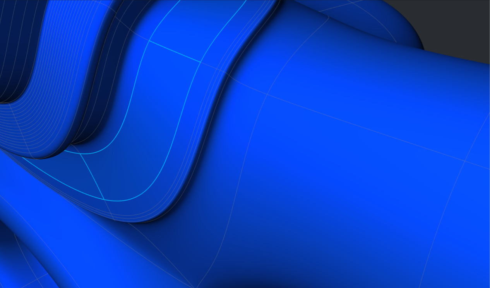
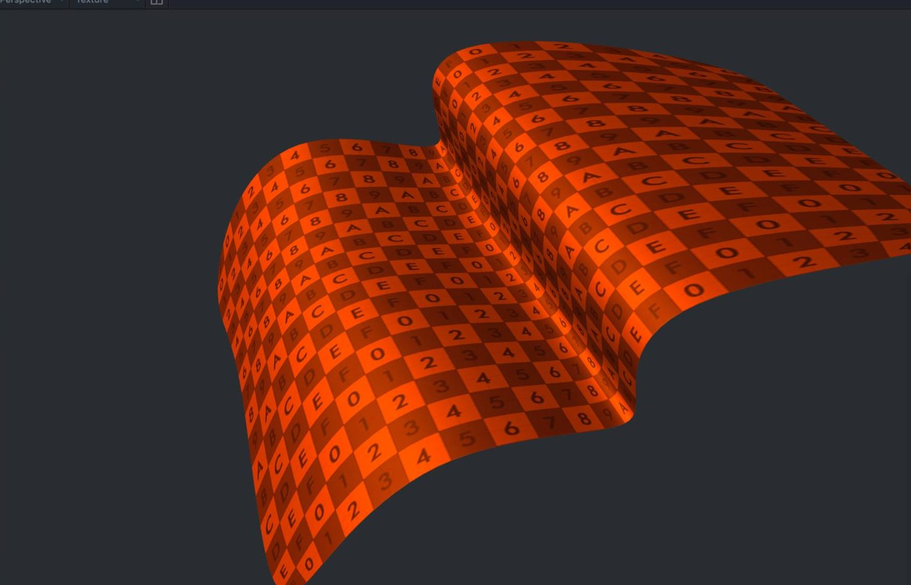
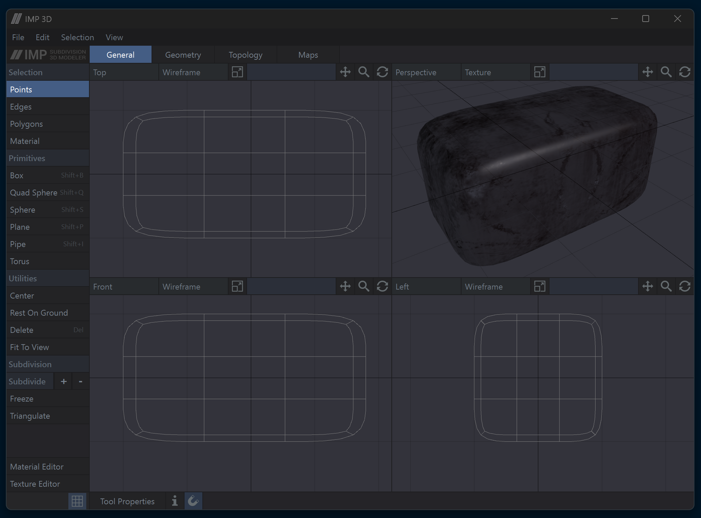

Subdivision modeling that feels fast and predictable
IMP3D is a focused 3D modeler for artists and engineers who care about clean Catmull-Clark surfaces, stable topology tools, and an uncluttered workflow. Built in modern C++ with a Vulkan rendering backend.
Note: IMP3D is under active development. Some features may be incomplete or temporarily disabled while the core is stabilized.

What makes IMP3D different
Box Modeling, refined
Start from simple primitives (box, cylinder, plane) and iteratively extrude, bevel, and connect to build complex shapes. IMP3D keeps these operations fast, stable, and topology-aware.
Subdivision Surface preview
Real-time Catmull-Clark subdivision with primary/secondary edge visualization. Edit the coarse mesh while previewing the smooth result.
UV Unwrapping
Robust UV workflows with industry-standard parameterization methods including LSCM and ABF++, producing predictable, low-distortion maps for texturing.
Topology-aware selection
Quad-aware loops and rings, reliable picking, and tools tuned for both perspective and orthographic workflows.
Performance & stability
Cache-friendly mesh data structures, fast undo/redo, and GPU-friendly rendering paths keep interaction responsive on real scenes.
Open & Free
No nags, no telemetry. Download, model, and ship. Source code and development happen openly on GitHub.
Screenshots


Working with IMP3D
Start by creating a primitive such as a Box or Quad Sphere. IMP3D supports selection modes available in every tab: Points, Edges, and Polygons.
Most tools operate on the current selection, or on the entire mesh when nothing is selected. Shift + Double-Click quickly selects polygon loops.
Use the Tool Properties dialog to adjust parameters precisely. Primitive tools expose segments, sides, and rings to control resolution and shape.
With a loop selected, click Extrude and drag to extrude geometry. Increase or decrease subdivision levels using the UI or the - and = keys.
Use Freeze to bake subdivision into real geometry, or Triangulate for export to game engines and other pipelines.
Note: Some features may be temporarily disabled as development continues.